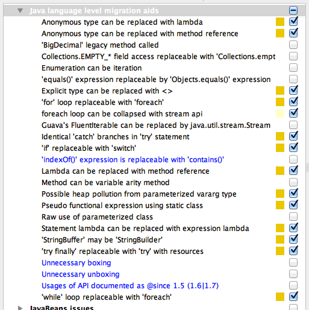
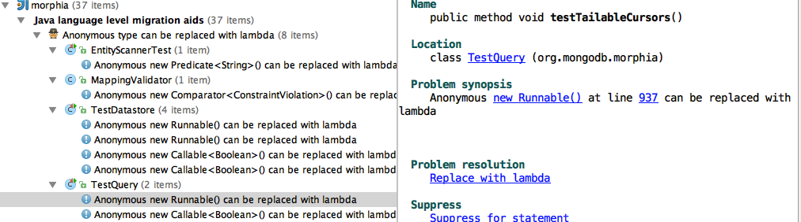
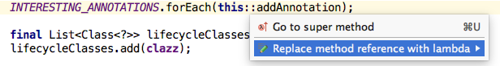
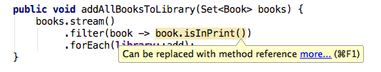
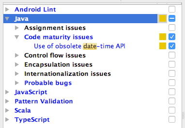
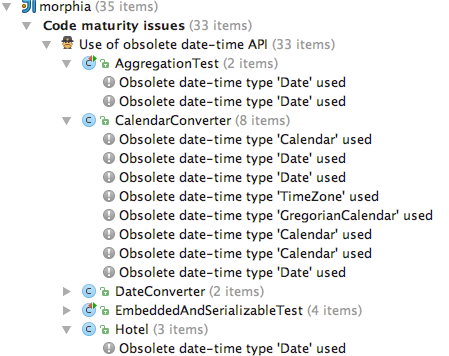
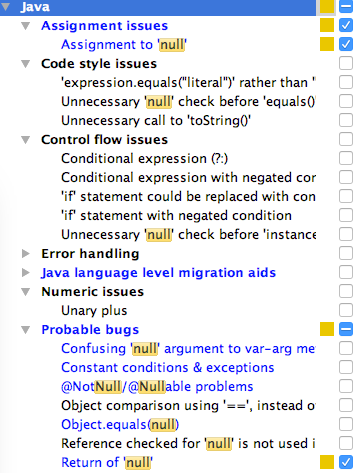
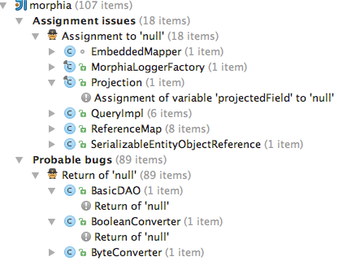

Keeping your code up to date with the latest versions of languages and libraries is a challenging task.
Fortunately, IntelliJ IDEA can make this easier, with inspections to guide your efforts, automatic fixes, and
the usual refactoring tools.
Java SE 8
brings entire new concepts to the language, like lambda expressions, and adds new methods to classes that
developers have been using comfortably for years. In addition, there are new ways of doing things, including the
new
Date and Time API,
and an Optional
type to help with null-safety.
In this tutorial we're going to show how IntelliJ IDEA can help you transition your code from Java 6 (or 7) to Java
8, using code examples to show what help is available and when you may, or may not, choose to use new features.
This tutorial assumes the following prerequisites:
You already have an IntelliJ IDEA project for an existing codebase.
The sheer number of options and features that IntelliJ IDEA has available might be overwhelming,
especially when tackling a problem as big as trying to migrate a whole codebase (or even just a module
or package) to a new version. As with most software development problems, it pays to approach this in an
iterative fashion.
Pick a small number of changes to implement.
Pick a section of the codebase to apply them to.
Apply the changes in batches, running your project tests frequently and checking in to your VCS system
when the tests are green.
To this end, this tutorial will group changes into sections rather than assume a Big Bang approach.
Initial setup
Make sure you're compiling with a Java 8 SDK. If you're not,
change your SDK
to the latest version of Java 8.
In the project settings, you should set your language level to "8.0 - Lambdas,
type annotations".
If you are compiling the code in a CI environment, you'll need to ensure the new code is compiled using
Java 8 there as well. Configuring this is beyond the scope of this tutorial.
Configuring and running language level migration inspections
Your project may already make use of inspections to encourage a certain level
of consistency and quality in the code. To focus purely on just making changes related to upgrading to
Java 8, we're going to create a new inspection profile.
As a starting point for this profile, deselect everything using the "reset to empty" button
.
We're going to select a set of language migration inspections to point out sections of the code we might
want to update:

These inspections will show us areas in your code where you may be able to use the following Java 8
features:
Click OK to save these settings to the "Java8" profile and close the settings window.
Run the inspections, selecting the "Java8" profile and the scope to run
the inspections on. If your project is small, that might be the whole codebase, but more likely you will
want to select a module or package to start with.
Once
Analyse code
has finished running, you'll see a set of results in the
Inspection Tool Window.
Lambda expressions
The inspections will show you places where you can convert code automatically to use lambda expressions.
There are a number of places you might typically discover this in your existing code, for example when
you create anonymous inner classes for:
In the Inspection Tool Window, you should see results grouped under "Java
language level migration aids". Under this heading, you may see "Anonymous type can be replaced with
lambda". Open up this heading to see all the sections of the code where IntelliJ IDEA has detected you can
use a lambda. You might see something like this:

For example, you may come across a
Runnable
anonymous inner class:
Many inspections suggest a fix that can be applied, and "Anonymous type can be replaced with
lambda" does have a suggested resolution. To apply the fix, either:
Click on the
Problem Resolution
in the right of the inspection window, in our case this is
Replace with lambda.
Or press ⌥⏎ on the grey code in the editor and select
Replace with lambda.
IntelliJ IDEA will then automatically change the code above to use a lambda expression:
You'll notice that lambda expressions can state very little in terms of type information. Here, the fact
that this lambda represents an implementation of
Runnable
all but disappears. IntelliJ IDEA will provide you with information about the type of the lambda expression
via the lambda icon in the left gutter:
Hovering over this will tell you the type, and clicking lets you navigate to the declaration.
Impact of applying lambda expressions
You should be able to automatically apply this fix to all places where anonymous inner classes are found
in your codebase without impacting the functionality in your system. Applying the change will generally
also improve the readability of your code, removing lines of boilerplate like in the example above.
However, you may want to check each individual change, as:
Larger anonymous inner classes may not be very readable in a lambda form.
There may be additional changes and improvements you can make.
Let's address both points with an example.
We might be using a
Runnable
to group a specific set of assertions in our test:
Runnablerunnable=newRunnable(){@Overridepublicvoidrun(){datastoreProvider.register(database);Assert.assertNull(database.find(User.class,"id",1).get());Assert.assertNull(database.find(User.class,"id",3).get());UserfoundUser=database.find(User.class,"id",2).get();Assert.assertNotNull(foundUser);Assert.assertNotNull(database.find(User.class,"id",4).get());Assert.assertEquals("Should find 1 friend",1,foundUser.friends.size());Assert.assertEquals("Should find the right friend",4,foundUser.friends.get(0).id);}};
Converting this to a lambda results in:
Runnablerunnable=()->{datastoreProvider.register(database);Assert.assertNull(database.find(User.class,"id",1).get());Assert.assertNull(database.find(User.class,"id",3).get());UserfoundUser=database.find(User.class,"id",2).get();Assert.assertNotNull(foundUser);Assert.assertNotNull(database.find(User.class,"id",4).get());Assert.assertEquals("Should find 1 friend",1,foundUser.friends.size());Assert.assertEquals("Should find the right friend",4,foundUser.friends.get(0).id);};
This is not much shorter, nor does it impact readability much.
In cases like these, you may choose to use IntelliJ IDEA's extract method to pull these
lines into a single method instead:
The second reason to check all your lambda conversions is that some lambdas can be further simplified.
This last example is one of them - IntelliJ IDEA will show the curly braces in grey, and
pressing ⌥⏎ with the cursor on the braces will pop up the suggested
change
Statement lambda can be replaced with expression lambda:
Once you've changed your anonymous inner classes to lambdas and made any manual adjustments you might want
to make, like extracting methods or reformatting the code, run all your tests to make sure everything still
works. If so, commit these changes to VCS. Once you've done this, you'll be ready to move to the next step.
New collection methods
Java 8 introduced a new way of working with collections of data, through the Streams API. What's less
well known is that many of the
Collection
classes we're used to working
with have new methods on them that are not via the Streams API. For example,
java.util.Iterable
has a
forEach
method that lets you pass in a lambda that represents an operation to run on every element.
IntelliJ IDEA's inspections will highlight areas where you can use this and other new methods.
Back in the Inspection Tool Window, you should see "foreach can be collapsed
with stream api" under "Java language level migration aids". You may not realise when you're going
through all the inspections, but not all of these fixes will use the Streams API (more on Streams later).
For example:
Note that IntelliJ IDEA has applied all simplifications it could, going as far as using a
Method Reference
rather than a lambda. Method references are another new features in Java 8, which can generally be used
where a lambda expression would usually call a single method.
Method references take a while to get used to, so you may prefer to expand this into a lambda to see the
lambda version:

Press ⌥⏎ on the method reference and click
Replace method reference with lambda. This is especially useful as you get used to
all the new syntax. In lambda form, it looks like:
Both of the new forms do exactly the same thing as the original code - for every item in the
INTERESTING_ANNOTATIONS
list, it calls
addAnnotation
with the item.
Streams API - foreach
IntelliJ IDEA's inspections will suggest using the
forEach on
Iterable
where appropriate, but it will also the new Streams API where this
is a better choice.
The Streams API
is a powerful tool for querying and manipulating data, and using it could significantly change and
simplify the code you write. For this tutorial, we're going to look at some of the simplest use
cases to get you started. Once you're more comfortable using this style of coding, you may then want
to use its capabilities further.
What does the Streams API give us that we can't simply get from using a
forEach method? Let's look at an example that's a slightly more complicated for loop than
the previous one:
In this case, IntelliJ IDEA has selected a method reference for the
forEach
parameter. For filter, IntelliJ IDEA has used a lambda, but will suggest in the editor that this particular
example can use a method reference:

Instead of "can be replaced with foreach" call you might see "can be replaced with collect call". This is
very similar to the above example, but instead of calling a
forEach
method at the end of the stream and performing some operation, this will use the stream's collect
method to put all the results from the stream operation into a new
Collection. It's very common to see a
for
loop that iterates over some collection,
performs some sort of filtering or manipulating, and outputs the results into a new collection, and
that's the sort of code this inspection will identify and migrate to using the Streams API.
In the Inspection Tool Window, you should see "foreach can be replaced with
collect call" under "Java language level migration aids". Selecting one of these inspection results will
show you a for loop that might look something like:
This does exactly the same thing the original code did - takes a collection of
Keys, "maps" each
Key
to its
Id, and collects those into a new list,
objIds.
Like the
forEach
example, IntelliJ IDEA can work out if a filter needs applying to a collect statement as
well as maps, so it can cleverly turn many of your complex loops into a set of Stream operations.
Impact of replacing foreach with streams
It may be tempting to run these inspections and simply apply all fixes automatically. When it comes to
converting your code to use new methods on Collections or Streams, a little care should be taken. The
IDE will ensure that
your code works the same way it used to, but you need to check that your code remains readable and
understandable after applying the changes. If you and your team are using Java 8 features for the first
time, some of the new code will be very unfamiliar and probably unclear. Take the time to look at each
change individually and check you're happy you understand the new code before going ahead.
Like with lambdas, a good rule of thumb is to start with small sections of code - short for loops that
translate into two or fewer stream operations, preferably with single-line lambdas. As you become more
familiar with the methods, then you may want to tackle more complex code.
Setting aside the fact that the original code is challenging to understand to begin with, you may choose not
to apply the changes for a number of reasons:
Despite refactoring away the outer-loop, there's still a for loop inside the
forEach method. This suggests
that there may be a different way to structure the stream call, perhaps using
flatMap.
The
destination.addAnnotation
method suggests that there may be a way to restructure this to use a
collect
call rather than a
forEach.
It's arguably not easier to understand than the original code.
However, you may choose to accept this change for the following reasons:
This is a complex piece of code that is iterating through and manipulating data in a collection,
therefore a move towards the Streams API is a move in the right direction. It can be further
refactored or improved later when the team's developers are more familiar with the way Streams
work.
In the new code the
if
condition has been moved into a
filter
call, making clearer what purpose this section of the code is.
Apart from the options "keep the code" and "apply the changes", there's a third option: refactor the old
code to something more readable, even if it doesn't use Java 8. This might be a good piece of code to
make a note of to refactor later, rather than trying to tackle all the code's problems while simply
trying to adopt more Java 8 conventions.
New date and time API
The inspections we've selected for our "Java8" profile help us to locate places where we can use
lambda expressions, new methods on Collections and the Streams API, and will apply fixes
automatically to those places. There are plenty of other new features in Java 8, and in the
following sections we'll highlight some features of IntelliJ IDEA that may help you use these too.
In this section, we'll look at locating places that may benefit from using the new
Date and Time API
instead of
java.util.Date and
java.util.Calendar.
You'll need to enable a new inspection to locate uses of the old Date and Time API.

Note that although many methods have been deprecated on
java.util.Date for some time, the class itself is not deprecated, so if you use it in your
code you will not receive deprecation warnings. That's why this inspection is useful to locate usages.
Run the inspection. You should see a list of results that looks something like
this:

Unlike the earlier inspections, these do not have suggested fixes as they will require you and your team
to evaluate the use of the old classes and decide how to migrate them to the new API. If you have a
Date
field that represents a single date without a time, for example:
publicclassHotelBooking{privatefinalHotelhotel;privatefinalDatecheckInDate;privatefinalDatecheckOutDate;// constructor, getters and setters...}
you may choose to replace this with a
LocalDate. This can be done via the context menu
Refactor | Type Migration...
or via ⇧⌘F6. Type LocalDate in the popup and select
java.time.LocalDate. When you press enter, this will change the type of this field and
getters and setters. You may still need to address compilation errors where the field, getters or
setters are used.
For fields that are both date and time, you may choose to migrate these to
java.time.LocalDateTime. For
fields that are only time,
java.time.LocalTime
may be appropriate.
If you were setting the original values with a new
Date, knowing that this is the equivalent to the date and time right now:
booking.setCheckInDate(newDate());
you can instead use the
now()
method:
booking.setCheckInDate(LocalDate.now());
A common and readable way to set a value for
java.util.Date
was to use
java.text.SimpleDateFormat. You
might see code that looks something like:
If this check in date has been migrated to a
LocalDate, you can easily set this to the specific date without the use of a formatter:
booking.setCheckInDate(LocalDate.of(2017,3,2));
These examples barely scratch the surface of the changes you may want or need to do in order to fully
utilise the new date and time features in Java 8. Take a look at the
tutorial provided by Oracle
for more information on the new API features and how to use them.
Impact of migrating to the new date and time API
Updating your code to use the new Date and Time API requires much more manual intervention than
migrating anonymous inner classes to Lambda Expressions and loops to the Streams API. IntelliJ IDEA will
help you see how much and where you use the old
java.util.Date and
java.util.Calendar
classes, which will help you understand the
scope of the migration. IntelliJ IDEA's refactoring tools can help you migrate these types if necessary.
However, you will need to have a strategy on how to approach each of the changes, which new types you
want to use, and how to use these correctly. This is not a change you can apply automatically.
Using optional
The last Java 8 feature we'll look at is the new
Optional
type.
java.util.Optional
gives you a way to handle null values, and a way to specify if a method call is expected to return a
null value or not. Like Date and Time, IntelliJ IDEA's features will help you to identify areas of your
code that might benefit from using the
Optional
type.
There are a number of inspections that look for the use nulls in Java code, these can be useful for
identifying areas that may benefit from using
Optional.
We'll look at enabling just two of these inspections for simplicity:

Run the code analysis. You should see a list of results that looks something like
this:

If you see "Assignment to null" for fields, you may want to consider turning this field into an
Optional.
For example, in the code below, the line where offset is assigned will be flagged:
privateIntegeroffset;// code....publicBuilderoffset(intvalue){offset=value>0?value:null;returnthis;}// more code...
That's because in another method, the code checks to see if this value has been set before doing
something with it:
if(offset!=null){cursor.skip(offset);}
In this case, null is a valid value for offset - it indicates this has not been set, and
therefore shouldn't be used. You may wish to change the field into an
Optional
of
Integer
via
⇧⌘F6, and alter the way the value is set:
privateOptional<Integer>offset;// code...publicBuilderoffset(intvalue){offset=value>0?Optional.of(value):Optional.empty();returnthis;}// more code...
Then you can use the methods on
Optional
instead of performing null-checks. The simplest
solution is:
if(offset.isPresent()){cursor.skip(offset);}
But it's much more elegant to use a Lambda Expression to define what to do with the value:
offset.ifPresent(()->cursor.skip(offset));
The inspections also indicate places where a method returns null. If you have a method that can return a
null value, the code that calls this method should check if it returned null and take
appropriate action. It's easy to forget to do this though, especially if the developer isn't aware
the method can return a null. Changing these methods to return an
Optional
makes it much more explicit this might not return a value. For example, maybe our inspections flagged this
method as returning a null value:
You'll need to change the code that calls these methods to deal with the
Optional
type. This might be
the correct place to make a decision about what to do if the value does not exist. In the example
above, perhaps the code that calls the
findFirst
method used to look like this:
Changing a field type to
Optional
can have a big impact, and it's not easy to do everything automatically. To start with, try to keep the
use of
Optional
inside the class - if you can change the field to an
Optional
try not expose this via getters and setters, this will let you do a more gradual migration.
Changing method return types to
Optional
has an even bigger impact, and you may see these changes ripple
through your codebase in an unexpected way. Applying this approach to all values that can be null could
result in
Optional
variables and fields all over the code, with multiple places to performing
isPresent
checks or using the
Optional
methods to perform an action or throw an appropriate exception.
Remember that the goal of using the new features in Java 8 is to simplify the code and aid readability,
so limit the scope of the changes to small sections of the code and check that using
Optional
is making your code easier to understand, not more difficult to maintain.
IntelliJ IDEA's inspections will identify possible places for change, and the refactoring tools can help
apply these changes, but refactoring to
Optional
has a large impact and you and your team should identify a strategy for which areas to change and how to
approach these changes. You can even use the suggested fix of "Annotate field [fieldName] as @Nullable"
to mark those fields that are candidates for migrating to
Optional, in order to take a step in that direction with a smaller impact on the code.
Summary
IntelliJ IDEA's Inspections, in particular those around language migration, can help identify areas in your
code that can be refactored to use Java 8 features, and even apply those fixes automatically.
If you have applied the fixes automatically, it's valuable to look at the updated code to check it
isn't harder to understand, and to help you become familiar with the new features.
This tutorial gave some pointers on how to migrate your code. We've covered
lambda expressions
and
method references, some new methods on
Collection,
introduced the
Streams API,
shown how IntelliJ IDEA can help you use the new
Date and Time API
and looked at how to identify places that might benefit from using the new
Optional type.
There are plenty of new features in Java 8 designed to make life easier for programmers - to
make code more readable, and to make it easier to perform complex operations on data structures.
IntelliJ IDEA of course not only supports these features, but helps developers make use of them, including
migrating existing code and providing help and suggestions in the editor to guide you as you use them.